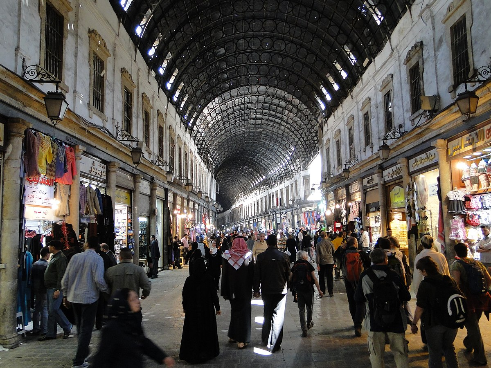
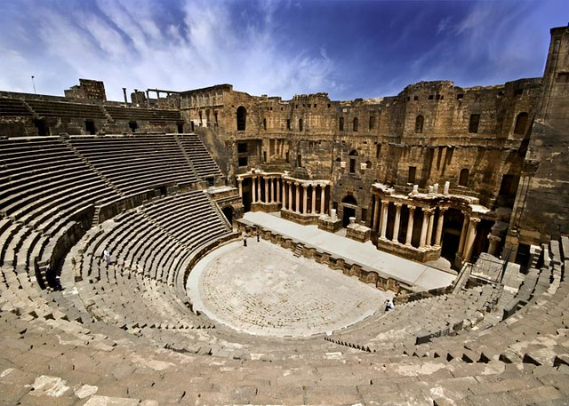
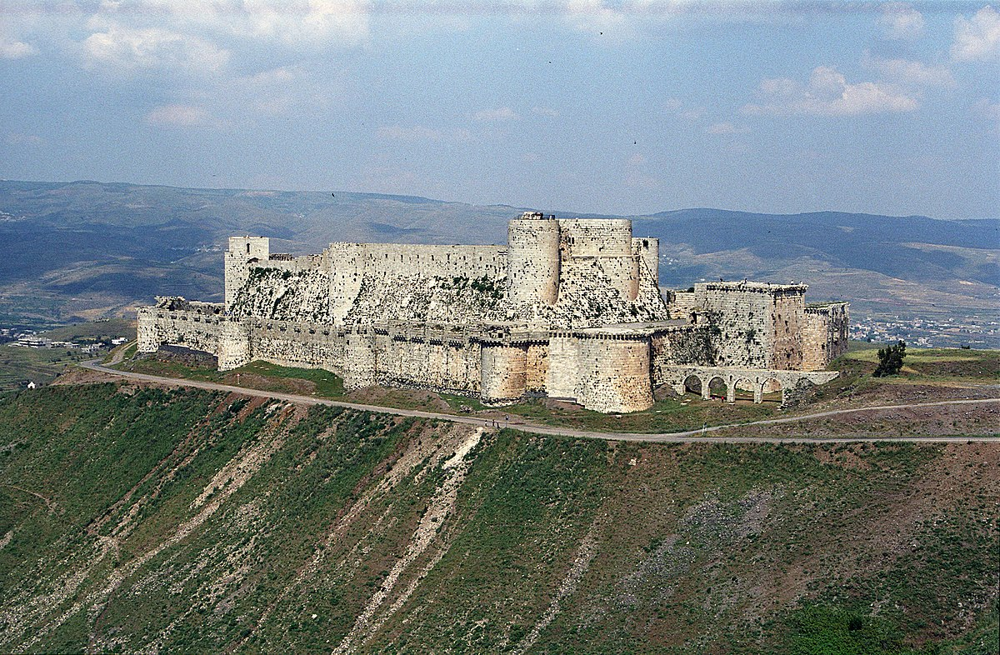

SURİYE
1 / 6

Al-Hamidiyah_Souq (Çarşı)
2 / 6

Halep Kalesi
3 /6

Roman Bosra Tiyatrosu
4 / 6

Emevi Cami
6 / 6

Halep Ulu Cami
❮
❯
1.Tarihçe
Antik Çağ:
- Suriye toprakları, MÖ 3. binyıldan itibaren Ebla, Mari, Yamhad gibi birçok uygarlığa ev
sahipliği yapmıştır.
- Büyük güçler bölgeyi kontrol altına almak için mücadele etmiştir: Mısırlılar, Asurlular,
Babilliler, Persler, Romalılar ve Bizanslılar.
- Şehirler ticaret ve kültür merkezleri olarak gelişmiştir: Halep, Şam, Antakya, Urfa
- Hıristiyanlık önemli bir din haline gelmiştir.
Antik Çağ:
- 7. yüzyılda İslam'ın fethiyle Araplaşma ve İslamlaşma süreci başlamıştır.
- Emeviler, Abbasiler ve Fatımiler gibi önemli İslam devletleri hüküm sürmüştür.
- açlı Seferleri bölgeyi etkilemiştir.
- Selçuklu ve Eyyubiler önemli siyasi ve askeri güçler haline gelmiştir.
Osmanlı Dönemi:
- 16.yüzyılda Suriye Osmanlı İmparatorluğu'na katılmıştır.
- 400 yılı aşkın süre Osmanlı egemenliğinde kalmıştır.
- Bölge önemli bir ticaret ve tarım merkezi olarak gelişmiştir.
- Farklı etnik ve dini gruplar bir arada yaşamıştır.
20. Yüzyıl:
- I. Dünya Savaşı'ndan sonra Suriye Fransız mandası altına girmiştir.
- 1946'da bağımsızlığını kazanmıştır.
- Bağımsızlıktan sonra siyasi istikrarsızlık ve askeri darbeler yaşanmıştır.
- 1963'te Baas Partisi iktidara gelmiştir.
- 1970'lerden itibaren Hafız Esad ve oğlu Beşar Esad liderliğinde otoriter bir yönetim
kurulmuştur.
- 2011 yılında başlayan Arap Baharı Suriye'de iç savaşa dönüşmüştür.
- Savaş halen devam etmekte ve bölgeyi büyük bir insani krize sürüklemiştir.
2.İklim
Suriye, Orta Doğu'da yer alan bir ülkedir ve genellikle Akdeniz iklimi etkisi altındadır. Yazlar
sıcak ve kurak geçerken, kışlar ılıman ve yağışlıdır. Ülkenin iç kesimlerinde ise iklim daha
kıtadır, yazlar sıcak ve kuru, kışlar soğuk ve yağışsız geçer. Suriye'nin genelinde tarım için
sulama gereklidir ve bunun için barajlar kullanılmaktadır. Son yıllarda iklim değişikliği
nedeniyle kuraklık sorunu artmıştır ve bu da tarımı olumsuz etkilemektedir. Suriye'nin
kuzeybatısında Akdeniz'e yakın bölgelerde ise yazlar sıcak ve kurak, kışlar ılık ve yağışlı
geçer. Bu bölgeler tarım için daha elverişli koşullara sahiptir. Özellikle Akdeniz kıyılarında
zeytin ve turunçgil yetiştiriciliği yaygındır. Suriye'nin iklimi, coğrafi konumu ve yerel
koşulları nedeniyle çeşitlilik gösterir. Bu çeşitlilik, ülkenin tarım, su kaynakları ve ekonomi
üzerinde önemli etkilere sahiptir.
3.Tarihi Yerler
Halep Kalesi
Halep Kalesi (Arapça: قلعة حلب), kuzey Suriye'nin Halep şehrinde, kuvvetlendirilmiş büyük Orta
Çağ sarayı. Dünyanın en eski ve en büyük kalelerinden biri sayılır. Kale tepesinin kullanımı MÖ
3.000 yıllarına dayanır. Sonradan Grek, Bizans, Eyyubi, Memluk ve Osmanlı medeniyetleri
tarafından fethedilmiştir. Yapının çoğu Eyyubi dönemine dayandığı düşünülmektedir. 2000'li
yıllarda Aga Khan Trust for Culture ile Aleppo Archeological Society tarafından kapsamlı bir
restore çalışması yapılmıştır. Şehre hakim olan Kale, 1986'dan beri UNESCO Dünya Mirası
listesindeki Antik Halep Şehri'nin parçasıdır.[1] Suriye İç Savaşı sırasında çatışmalardan
etkilendi.[2] 2023 Kahramanmaraş depremlerinde kalenin bazı bölümleri hasar gördü
Al-Hamidiyah_Souq (Çarşı)
Hemediye Çarşısı, Şam, Suriye'de bulunan en eski ve önemli çarşılardan biridir ve ülkenin en
önemli turistik ve tarihi mekanlarından biridir. Hemediye Çarşısı, Şam'ın eski şehrinin doğu
kısmında yer alır ve şehrin mirası için ayrılmaz bir parçasıdır.
Hemediye Çarşısı, çeşitli ürünler ve mallar sunan geniş bir yelpazeye sahiptir. Çarşı, tek bir
cadde boyunca uzanır ve kıyafetlerden ayakkabılara, kumaşlardan antikalara, mücevherattan
baharatlara, parfümlere ve ev eşyalarına kadar her şeyi satan dükkanlarla doludur. Ayrıca,
çeşitli turistler ve ziyaretçiler, eşsiz atmosferin tadını çıkarmak ve hediyelik eşyalar almak
için buraya akın ederler.
Hemediye Çarşısı aynı zamanda yerel halkın ve ziyaretçilerin alışveriş yapmak, sohbet etmek ve
canlı atmosferin tadını çıkarmak için buluştuğu bir sosyal merkezdir. Çarşı, geleneksel Suriye
ve Orta Doğu mutfağı sunan birçok kafe ve restorana ev sahipliği yapar, bu da çarşıda gezintiden
sonra dinlenmek ve yemek yemek için mükemmel bir yer haline getirir.
Ticari ve kültürel hayatın yanı sıra, Hemediye Çarşısı, geleneksel Suriye mimarisinin
güzelliğini yansıtan harika tarihi binalara sahiptir. Eski kemerler, dar sokaklar ve eski
tasarımlar, bu yere benzersiz bir cazibe katmaktadır.
Palmira çölü
Palmira (Arapça: تدمر , Tedmur veya Tadmor, İngilizce: Palmyra) orta Suriye'de antik zamanların
önemli dini ve ticari merkezi olan, UNESCO tarafından 1980 yılında Dünya Mirası listesine alınan
şehir.
Kent, Humus Valiliği'nin, Palmira İli'ne bağlı bulunmaktadır. Şam'ın 215 km kuzeydoğusunda,
Humus'un 155 km doğusunda ve Fırat'ın 120 km güneybatısında bir vaha üzerinde kurulmuştur.
Suriye çölünün ticari kervanlarının geçiş noktasında olması sebebiyle "Çölün Gelini" de denilen
şehrin isminin bulunan ilk bilgilere göre Tedmur, Tedmür, Tadmur veya Tudmur[1] olduğu Mari'de
bulunan Babil tabletlerindeki kayıtlardan anlaşılmıştır.[2] Fransız arkeologlar tarafından 1933
yılından itibaren antik Mari şehrinden çıkarılan 25.000 tabletten anlaşıldığına göre Palmira'nın
tarihi MÖ 19. yüzyıla kadar gerilere gitmektedir. Yunan ve Roma kaynaklarında ise 1. yüzyıldan
itibaren kayıtlara rastlanılmıştır.
Antik kent, Suriye İç Savaşı'nda tahrip edildi.[3][4] Yeniden canlandırılması için 3D modelleri
hazırlanmış ve bazı eserleri restore edilmiştir
Emevi Cami

Emevi Camii (Arapça: جامع بني أمية الكبير Ğām' Banī 'Umayya al-Kabīr), Şam Ulu Cami olarak da
bilinen yapı, Şam'ın eski şehir kısmında yer alır ve dünyanın en büyük ve en eski camilerinden
birdir.
634 yılında, Şam'ın Araplar tarafından alınmasından sonra, Roma İmparatoru I. Konstantin
zamanından beri Vaftizci Yahya'ya adanmış Hristiyan bazilika, Ebu Ubeyde bin Cerrah'ın gözetimi
altında 635 yılında yapıya eklemelerle camiye çevrilmiştir. Yetmiş yıl boyunca aynı yapı hem
kilise hem de cami olarak iki dinin ibadethanesi olmuş; Müslüman nüfusun zaman içinde artması
sonucu tamamı camiye çevrilmiştir.[1]
Cami, bugün hala korunan Vaftizci Yahya kafası gibi kutsal emanetleri muhafaza eder. Ayrıca cami
içerisinde Şiilik için önemli nirengi noktaları vardır. Bunlar arasında I. Yezid tarafından
gösterilmek üzere saklanılan Muhammed'in torunu Hüseyin'in kafası yer almaktadır. Caminin kuzey
duvarına eklenmiş küçük bir bahçede Selahaddin Eyyubi'nin türbesi bulunmaktadır.
Orijinal planıyla günümüze kadar gelebilmiş olan Şam Emeviye, enine gelişme gösteren, mihrap önü
kubbeli plan tipine sahiptir. Yapımından sonra kurulan tüm İslam devletlerinde cami mimarisine
model olmuş ilk yapıdır.[1] Cami mimarisine birçok yenilik katmış, hatta çok sonra Anadolu
camilerini plan yönünden etkilemiştir.[1]
Caminin bitkisel ve geometrik motiflerle şehir ve bina tasvirlerinden meydana gelen fevkalâde
zengin mozaik süslemeleri de sanat tarihi bakımından büyük bir önem taşır.[2] Caminin bir diğer
özelliği de İslâm alemindeki ilk umumi helâların burada yapılmış olmasıdır.
Şovalyeler Kalesi

Bölgeye ilk olarak 11. yüzyıl'da, Kürtler tarafından yerleşilmiş ve bunun sonucunda "Kürtlerin
Kalesi" anlamına gelen "Hısnu'l-Ekrâd" adını almıştır. Haçlıların, Haçlı Seferleri'yle bölgeyi
fethetmesinden sonra, Trablus Kontluğu'na bağlanmış ve zamanın Trablus Kontu II. Raymond
tarafından, 1142 yılında, Haçlı Seferleri'nde genişçe yer alan en önemli şövalye tarikatlarından
biri olan Hospitalier Şövalyeleri yönetimine verilmiştir. Bu zaman içerisinde "Crac dé
l'Ospital" adı altında tanınmıştır.
1271'de, Müslümanların Yakın Doğu ve Levant yerleşkelerini tekrar ele geçirmeye başlamasıyla,
düşmüş ve Müslüman yönetimini geçmiştir. Haçlı Seferleri'nin sona ermesiyle zamanla aktivitesini
yitiren kaleye, 19. yüzyıl'da günümüzde geçerli olan ve en yaygın ismi olan Hısnu'l-Ekrâd'dan
bozularak "Krak des Chevaliers" (ya da "Crac des Chevaliers") adı verilmiştir.